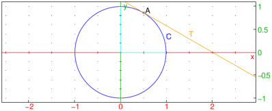
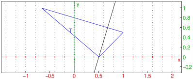

24.13.1 Measurement and display
Many commands to find measures have a version ending in at
(or atraw) which are used to interactively find and display
the appropriate measure in a two-dimensional geometry screen. To use
them, open a geometry screen with Alt+G and then select the
appropriate measure from the
Mode ▸ Measure menu.
Once the mode is selected, then clicking on the names
of the appropriate objects (or, if a point is being selected, a name
will be automatically generated if clicking on an open point) with the
mouse, and then clicking on another point will put the measurement at
the point; if the mode is the version ending in at, then the
measurement will have a label, if the mode is the version ending in
atraw, then the measurement will appear without a label.
The commands with at and atraw versions are the following:
-
distance, distanceat, distanceatraw —
This finds the distance between two points or other geometric objects
(see Section 24.13.2).
- angle, angleat, angleatraw — This finds the
measure of an angle BAC given points A, B and C (see Section 24.13.4).
- area, areaat, areaatraw —
This finds the area of a circle or a polygon
which is star-shaped with respect to its first vertex
(see Section 24.13.6).
- perimeter, perimeterat, perimeteratraw —
This finds the perimeter of a circle, circular arc or a polygon
(see Section 24.13.7).
- slope, slopeat, slopeatraw —
This finds the slope of a line, segment, or
two points which determine a line
(see Section 24.13.8).
These commands can also be used from the command line. They are like
the measurement command but take an extra argument, the point to
display the measurement. When using the version ending in
at, use names for the objects rather create the objects
within the measurement command.
Examples
| S:=square(1/4+i/4,1/2-i/2); areaat(S,8/7+i/4) |

| S:=square(1/4+i/4,1/2-i/2); areaatraw(S,8/7+i/4) |
More sophisticated legends are created with the legend command
(see Section 24.3.3).
| S:=square(1/4+i/4,1/2-i/2); a:=area(S); legend(8/7+i/4,"Area(S)="+string(a),blue) |

The extract_measure command displays a measurement.
-
extract_measure takes
atcommand, one of the at or atraw
commands (which displays a measurement).
- extract_measure(atcommand)
returns the measurement.
Example
| A:=point(-1); B:=point(1+i); C:=point(i);
extract_measure(angleat(A,B,C,0.2i)) |